Short answer
The HubSpot Agent CLI is a beta command-line tool, run as hubspot, that lets AI agents such as Claude Code, Claude Cowork and Codex read and change CRM data using your HubSpot permissions. Install it with HubSpot's script, sign in with hubspot auth login, add the skills with npx skills add hubspot/agent-cli-skills, and use --dry-run before any write. It is not the hs CLI that builds apps, themes and modules. Write commands can delete live data, so start with reads and test in a sandbox when you can.
1. What it is, and what it is not
HubSpot's docs describe the Agent CLI as a command-line tool designed primarily for AI agents. An agent installs it, then uses it to work with your CRM on your behalf. You can also run it yourself in a terminal for scripting. It works with the permissions of the connected HubSpot user, so depending on your access it can create, update or delete records.
It is a different tool from hs, the @hubspot/cli developer CLI that builds apps, themes and modules. The Agent CLI is the hubspot command. If you only want one-off questions or drafts from your HubSpot data, HubSpot points to the Claude and ChatGPT connectors, which need no CLI install. See use the HubSpot connector in Claude.
HubSpot's developer page says commands, flags and behavior may change without notice, and that create, update and delete can modify or permanently delete live data. It strongly recommends --dry-run before changes and testing in a sandbox account when you can.
2. Install it
The easiest route is to paste HubSpot's prompt into your agent, which installs the CLI, signs in, adds the skills and explores hubspot --help. To do it by hand, the installer runs from HubSpot's API host. Read the script first if you prefer.
# macOS, Linux, WSL, Bash
curl -fsSL https://api.hubapi.com/hub/cli/backend/hub-cli/latest/install.sh | sh
# Windows PowerShell
irm https://api.hubapi.com/hub/cli/backend/hub-cli/latest/install.ps1 | iexThe installer adds the CLI to your PATH, so open a new terminal and check it.

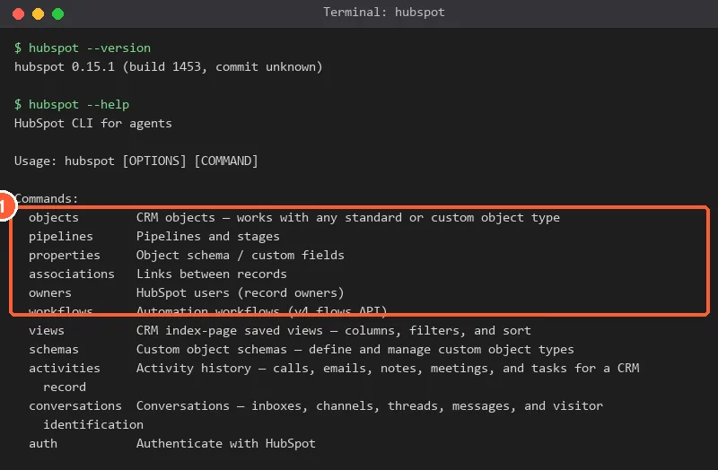
This machine already had the CLI installed. hubspot --version printed 0.15.1, and the help lists command groups such as objects, pipelines, properties, workflows, reports and segments.
Using Claude Cowork on a Team or Enterprise plan? HubSpot says outbound network access is restricted by default, so install and upgrade can fail with a network error until a Claude organization admin allows api.hubapi.com under Organization settings > Capabilities.
3. Sign in
Most people should use OAuth. Run hubspot auth login. A browser window opens, you sign in, review the permissions and click Connect app. The token matches your user permissions, refreshes itself, and hubspot auth logout clears it. Check the session any time with hubspot whoami.
The first screen lists the accounts your login can reach and asks you to choose one. Pick the account, then click Choose Account.

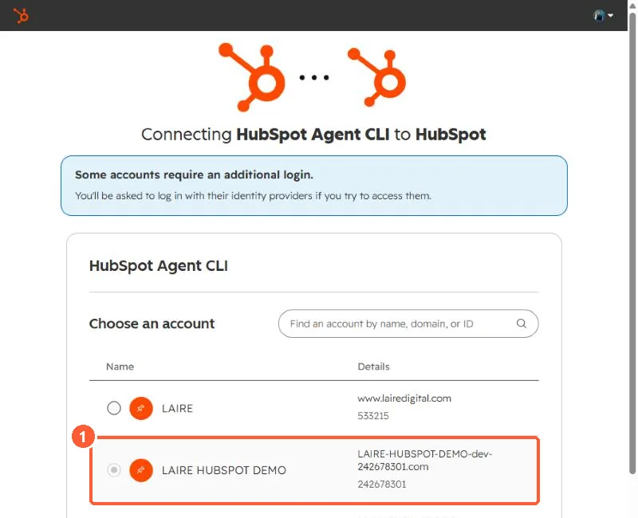
The next screen lists what the CLI can access. One permission is required, and the rest are optional. The Select switch offers All, View-only and None.

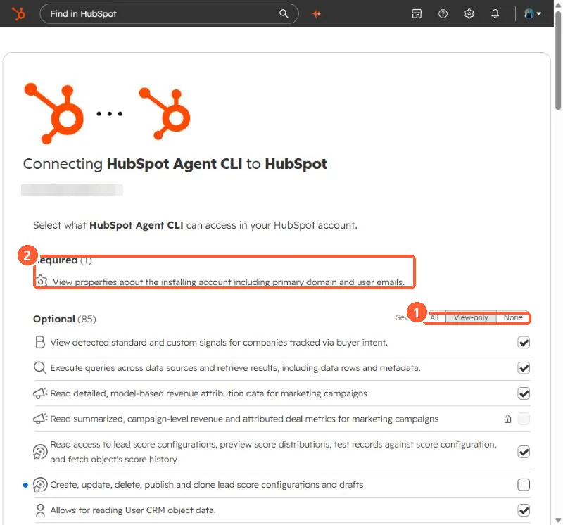
I connected my demo portal and chose View-only, which ticked the read permissions and left the create, delete and change permissions unticked. The page showed 85 optional permissions. For a first run, that is the safest choice.

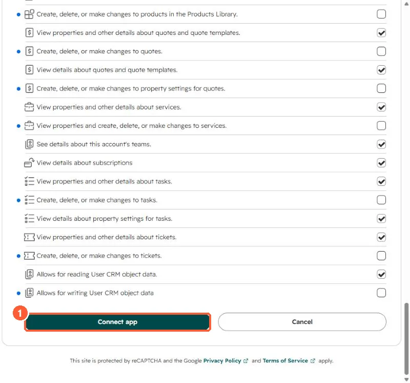
After Connect app, the browser lands on a local page at 127.0.0.1:3000 that says Authentication successful, and the terminal confirms the portal. On my machine the CLI also printed that an update was available and upgraded itself first.

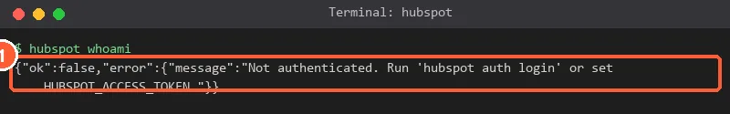
Before I signed in, hubspot whoami answered with an error that says to run hubspot auth login or set HUBSPOT_ACCESS_TOKEN. That is the expected state of a fresh install.

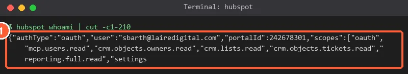
After signing in, whoami showed authType oauth, my user, the demo portal ID, and a list of scopes that were all read scopes, matching the View-only choice.
Admin mode. During the beta, some account-level operations do not work with OAuth alone, such as schema changes, deleting records, and some association, activity and destructive commands. For those, HubSpot has you set a service key as the HUBSPOT_ACCESS_TOKEN environment variable. When it is set, the CLI uses it before cached OAuth credentials, and unset HUBSPOT_ACCESS_TOKEN returns you to OAuth. HubSpot warns that admin mode has broader permissions and no per-user audit trail, so keep it to trusted environments.
4. Run commands
Commands follow hubspot <noun> <verb>, and --help works at every level.
hubspot --help
hubspot objects --help
hubspot objects types
hubspot objects search --type contacts --filter "email=jane@example.com"
hubspot objects list --type contacts --properties email,firstname,lastname
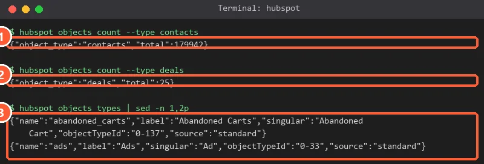
Against my demo portal, objects count --type contacts returned a total of 179,942 and deals returned 25. I used counts so no contact names appear. objects types printed 99 object types.
Output is JSONL by default, which agents handle well. Use --format json or --format table when a person is reading. HubSpot's list covers objects, pipelines, properties, associations, owners, workflows, views, schemas, activities, reports, segments, conversations, sequences, imports, analytics and more.
Not every command works with OAuth alone during the beta. On my View-only login, hubspot pipelines list --type deals was refused with a message that the endpoint does not support user-level OAuth tokens and that I should set HUBSPOT_ACCESS_TOKEN to a service key.

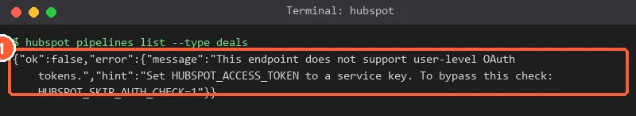
5. Always dry-run writes first
Every write command supports --dry-run, which prints what would happen without changing anything. HubSpot says the output has the same shape as the input for the next command, so you can save a plan, read it, then feed it back in.

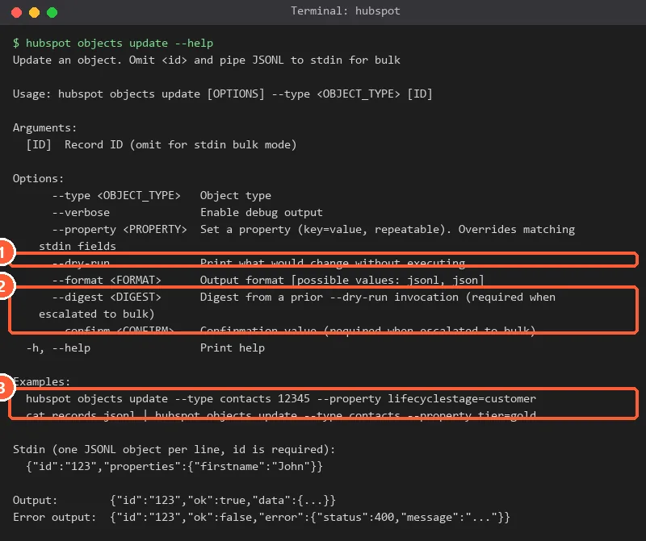
hubspot objects search --type contacts --filter "email~example.com" --format jsonl \
| hubspot objects update --type contacts --property tier=gold --dry-run > plan.jsonl
cat plan.jsonl | hubspot objects update --type contacts
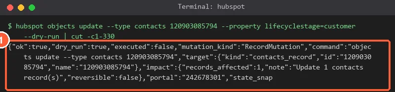
I ran a dry run that would set a demo contact's lifecycle stage to customer. The result said executed false, 1 record affected, and reversible false. Nothing changed, and the plan warned that the change could not be undone.
Some destructive commands, such as deletes, also need a safety digest from a prior dry run, and the help for objects update lists --digest and --confirm for bulk changes. hubspot history shows a local audit log of destructive operations.
6. Add the skills
In the agent workspace, run npx skills add hubspot/agent-cli-skills. The skills are markdown files that give the agent guidance for HubSpot tasks. HubSpot's repository lists skills such as bulk-operations (the foundation, covering JSONL pipes and dry runs), crm-lookup, crm-data-quality, deal-management, sales-reporting, team-ownership, ticket-resolution and workflow-automation. Read them in the public repository before you let an agent follow them. Run npx skills update to refresh, and hubspot upgrade to update the CLI itself.
7. Control who can connect it
HubSpot recommends admins join the App Governance beta. Super Admins then go to Settings > Integrations > Connected Apps > Approved apps, find HubSpot Agent CLI, and approve it, choose who can install it and set optional data permissions. A user without install access sees a request screen after hubspot auth login and can ask a Super Admin to approve. This controls authorizing the OAuth connector, not downloading the binary, and it does not cover admin mode with a service key.

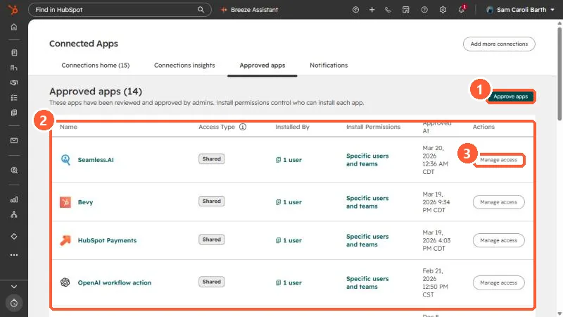
My Approved apps tab lists 14 apps, each with its access type, how many users installed it, its install permissions and a Manage access button.
8. Habits HubSpot recommends
- Start with reports, summaries and analysis before anything that modifies data.
- For scheduled or recurring tasks, start with one narrow use case.
- Review recommendations and large updates before applying them.
- Use clear prompts that describe the result you want, and follow your data governance policy.